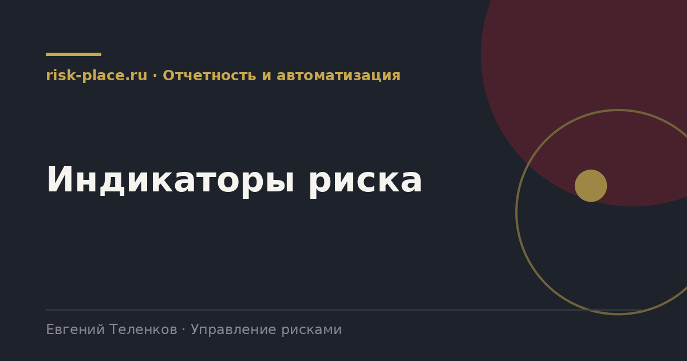

risk-
risk-Отталкиваться от риска
- Индикатор выбирается под конкретный риск, а не из списка красивых показателей
Главная · Библиотека · Отчетность и автоматизация · Индикаторы риска
Библиотека · Отчетность и автоматизация
Индикатор нужен, чтобы узнать о риске до его реализации. Иначе это не индикатор, а статистика потерь.

Запаздывающий индикатор показывает то, что уже произошло. Число несчастных случаев, сумма потерь, количество отказов. Он полезен для оценки результата, но управлять по нему нельзя, потому что событие уже наступило.
Опережающий индикатор показывает нарастание условий, при которых событие становится вероятным. Доля просроченного технического обслуживания, число вакансий в критичных подразделениях, остаток критичного сырья в сутках, доля сверхурочных часов, число выявленных при обходах нарушений. Именно на них строится управление.
Для одного и того же риска.
| Риск | Запаздывающий | Опережающий |
|---|---|---|
| Остановка производства из-за отказа оборудования | Число аварийных остановок | Доля просроченных плановых ремонтов, число отложенных заявок на запчасти |
| Срыв поставки критичного сырья | Число фактических срывов | Остаток в сутках потребления, доля закупок у единственного поставщика |
| Уход ключевого персонала | Текучесть по итогам квартала | Доля сотрудников без замены, число незакрытых вакансий свыше трех месяцев, результаты опроса вовлеченности |
| Тяжелый несчастный случай | Частота травм | Число сообщений о почти происшествиях, доля выявленных нарушений при обходах, доля выполненных мероприятий по высоким профрискам |
| Кассовый разрыв | Факт разрыва | Просроченная дебиторская задолженность, доля выручки от одного клиента, запас ликвидности в днях |
Частые вопросы
Одна форма для любого вопроса
Расскажем о ближайших датах, предложим формат под ваш состав участников и назовем порядок бюджета.
Предпочитаете почту — напишите на info@risk-place.ru. Адрес: Москва, улица Скаковая, 32с2.